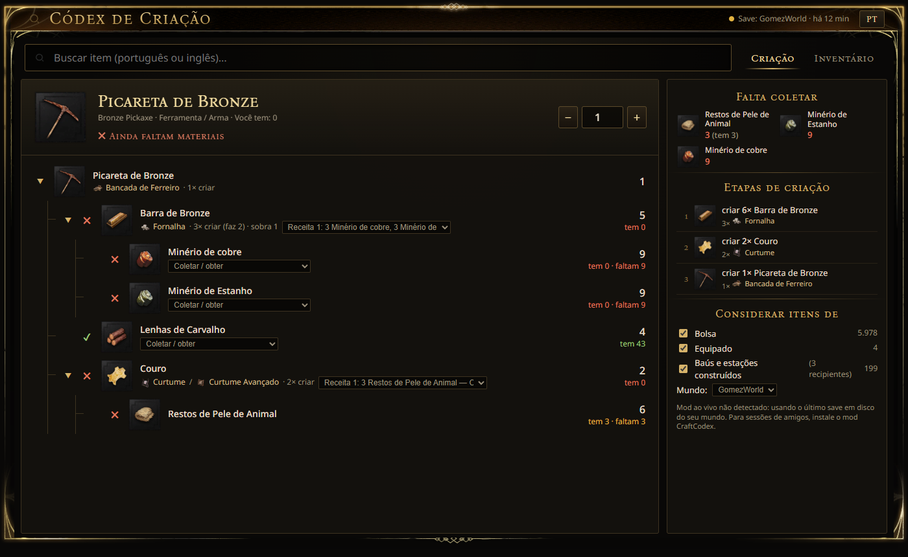

Busque qualquer item do jogo, em português ou inglês, e veja a árvore completa de criação, com quantidades, estações e o que você já tem ou ainda falta no inventário e nos baús da sessão em que você está jogando.
In-game crafting tree overlay for RuneScape: Dragonwilds, with your live inventory. English & PT-BR.

Feito para não precisar abrir wiki nem planilha no meio da partida.
Todos os itens do jogo (~2.300) e peças de construção, com os nomes oficiais em português e inglês.
Cada ingrediente até a matéria-prima, com quantidades, quantas criações, sobras e em qual estação.
Soma bolsa, equipamento, baús e estações construídos e mostra exatamente o que falta.
“Falta coletar” vira sua lista de compras, e as etapas aparecem na ordem certa para criar.
Abre por cima do jogo com F8, no visual do próprio Dragonwilds.
Com o mod opcional, lê a sessão atual: no seu mundo ou no de um amigo, inclusive crossplay.
A interface de verdade, aqui no navegador, com alguns itens e um inventário de exemplo. Clique nos ingredientes, troque a quantidade e as receitas.
Na demo há só alguns itens e um inventário fictício. No app instalado você tem todos os itens do jogo e o seu inventário de verdade.
Windows 10/11, com o jogo instalado pela Steam.
Baixe o ZIP e extraia em qualquer pasta, ou use git clone.
Dê dois cliques em Instalar.cmd. Ele acha o jogo, extrai os dados da sua instalação e cria o atalho. Leva de 2 a 4 minutos.
Abra o Códex de Criação pelo atalho e aperte F8 no jogo. Esc fecha.
Precisa do Node.js 20+; o instalador oferece instalar se faltar. Depois de cada patch do jogo, rode o Instalar.cmd de novo.
Sem o mod, o Códex usa o último save do seu mundo. Com ele, lê a sessão atual a cada 2 segundos.
Desativar mod.cmd deixa o jogo 100% original; Ativar mod.cmd liga de novo.Mods não são oficiais. Hoje o jogo roda sem anti-cheat e o UE4SS funciona em multiplayer, mas uma atualização pode mudar isso. Se o jogo não abrir depois de um patch, use Desativar mod.cmd.
Use o modo de vídeo “janela sem bordas” / “tela cheia em janela”. A tela cheia exclusiva não permite overlays.
Sim: edite hotkey em %APPDATA%\dragonwilds-crafting-codex\config.json (ex.: "F9" ou "Alt+C") e reabra o Códex.
Ícones, textos e fontes são da Jagex. O instalador extrai tudo da cópia instalada de cada pessoa, o que também deixa os dados sempre na versão do seu jogo.
Sim. Com o Códex aberto, acesse http://127.0.0.1:7777 no navegador ou no navegador do overlay da Steam (Shift+Tab).